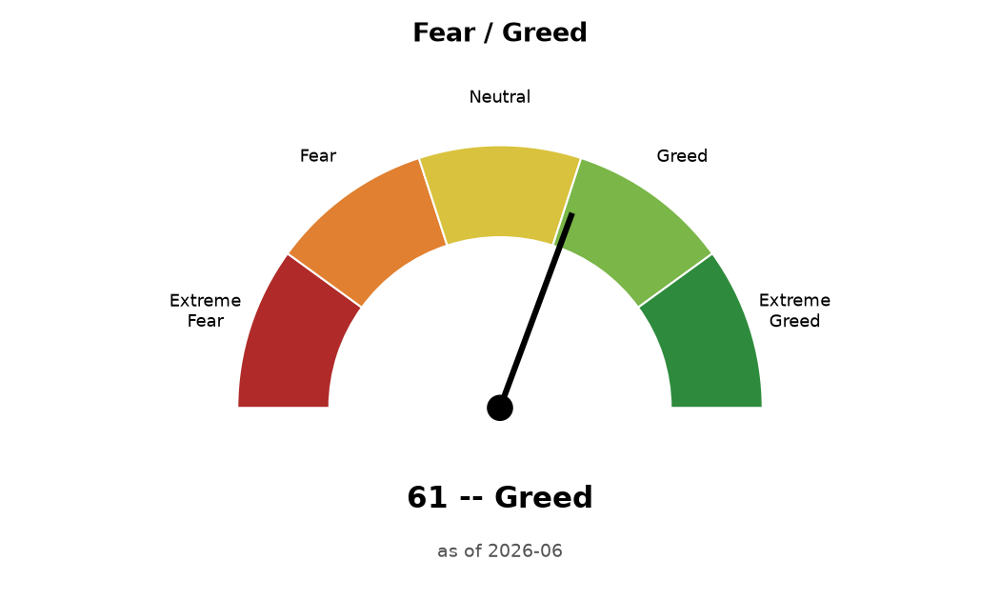
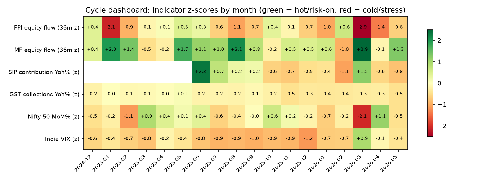

India VIX (2026-06): 13.6 -- calm volatility regime.
Describes current + recent flow direction and cites
Study A's historical precedent where applicable. Not a sized trading
signal -- every bucket here has a small sample (12-24 months); use this to
read the tape, not as an instruction.
Fear / Greed gauge

Same methodology as CNN's Fear & Greed Index: each input is
percentile-ranked against its own full history, then averaged into a 0-100
composite. 100 = greediest reading in that series' history, 0 = most
fearful. This is a sentiment/positioning read, not a valuation or
forward-return model.
Volatility (India VIX, inverted): 79/100
Momentum (Nifty 3m return): 68/100
Foreign flow (FII equity): 3/100
Domestic flow (MF equity): 96/100
A single high/low composite can hide a split between
components -- check the breakdown above, not just the headline number, and
read alongside the "Current read" verdict below for the buy/sell direction
behind the score.
All-time high in this dataset: ₹32,087 crore in 2026-03.
SIP AUM (2026-05): ₹17.12 lakh crore, 21.0% of total industry AUM.
Contributing SIP accounts (2026-05): 9.64 crore.
Net equity inflow (2026-05): ₹22,907 crore.
Unusual SIP contribution months (>2σ MoM move, of 23 months' worth of MoM data): 2024-07 (+9.7% MoM). Small-sample caveat: with under two years of history the z-score threshold itself is noisy, so treat this as 'worth a second look', not a statistically robust anomaly detector.
Unusual Total industry AUM months (>2σ MoM move, of 23 months' worth of MoM data): 2026-04 (+11.1% MoM), 2026-03 (-10.1% MoM). Small-sample caveat: with under two years of history the z-score threshold itself is noisy, so treat this as 'worth a second look', not a statistically robust anomaly detector.
Avg. monthly SIP ticket size (2026-05): ~₹3,211 per account. Note: this jumped across Jan-Apr 2025 mechanically, because the dormant-folio purge shrank the accounts denominator faster than contribution changed -- not a sign of investors suddenly investing more per SIP.
SIP contribution was 135% of net equity inflow in 2026-05 (only 9 months have both figures available; 4 of those months had SIP contribution alone exceed total net equity inflow -- meaning discretionary/lump-sum flow was flat or negative that month).
SIP contribution MoM change vs. Nifty 50 MoM change: correlation -0.23 across 23 months -- close to zero/weak means SIP flow doesn't move with the market, consistent with the 'systematic investing is resilient through drawdowns' narrative.
Worst Nifty 50 month in this window: 2026-03 (-11.3%), vs. SIP contribution that same month: +7.5% MoM.
Coverage caveat: SIP contribution figure present for 24/24 months -- AMFI's Monthly Note phrasing varies enough that some months' figures aren't extracted yet. Category-wise debt/hybrid net flows are sparser still and only meant as directional context.
Stoppage ratio / new-vs-discontinued SIP counts are not published in AMFI's Monthly Note at all and are left blank here; treat any stoppage-ratio figure from elsewhere as a secondary-source number, not something this pipeline can independently verify.
Cycle dashboard
Where each flow/macro indicator sits vs its own history (z-scores;
change-space series only -- levels are never correlated or scored).

Study A: who absorbs FII selling, and what happens next?
Months of unusually heavy FII selling (36-month rolling z-score < -1),
split by whether domestic mutual funds absorbed the selling (median split of
MF flow z-score), vs Nifty 50 forward returns. Flow data: NSDL (FPI) and
SEBI-sourced MF trends, 2007-2026; z-scores need a 36-month warm-up.
Bucket
Months
1m fwd mean%
1m fwd % positive
3m fwd mean%
3m fwd % positive
6m fwd mean%
6m fwd % positive
Heavy FII selling, absorbed by MFs
12
1.76
50.0
4.86
83.0
7.56
91.0
Heavy FII selling, weak MF absorption
12
-0.62
18.0
1.69
50.0
4.12
67.0
All other months (baseline)
167
0.94
58.0
2.45
60.0
5.14
67.0
Exploratory: ~12 months per selling bucket is far too few
for statistical significance -- read this as an evidence table consistent
with the "domestic absorption cushions FII exits" mechanism, not a tested
trading rule. The March 2026 crash (FPI -1.18 lakh cr, MF +0.99 lakh cr,
Nifty -11.3%, then +7.5% the next month) is the archetype.